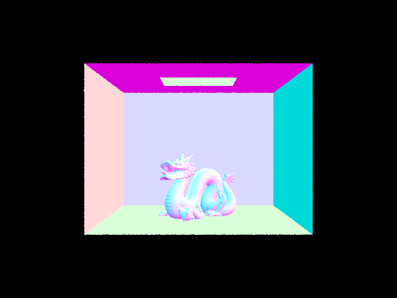

In the rendering pipeline, we first implement a function called generate_camera_ray that is generating a camera ray given a point in image space. This is done by generating rays from an origin in camera space to an image coordinate, and transforming the ray into world coordinates. Then, that function is called by raytrace_pixel, which then generates a number of rays for a pixel, and then averages the radiance samples to get a pixel value. At this point, it just averages what test_radiance_global_illumination outputs, which checks whether or not the ray intersects with anything in the bvh, and since we hadn’t implemented that at this point, it just returns the direction of the ray. However, we want our scene to render objects, so we must calculate some primitives, such as triangle and sphere intersections to get where in the scene we intersect objects. Then, after we implement such steps we can render basic scenes, but only with normal shading.
Explain the triangle intersection algorithm you implemented in your own words.We used the Moller-Trumbore algorithm which is an optimized version of the ray-triangle intersection algorithm. It ultimately finds the solution of the ray triangle intersection based on barycentric weights of the points of the triangle. It does this by computing 5 cross products (as noted in the slides), and using those cross products in a formula derived by using Cramer’s rule and the determinant of matrices in order to solve the linear system to get t, b_1 and b_2. Then, we used those coefficients b_1, b_2 and 1-b_1 and b_2, and if they’re all positive, then we know it’s inside the triangle, and substitute t back into the ray equation to get the point of intersection, and if there’s any negative terms, then we know it’s outside of the triangle and don’t return an intersection.
Show images with normal shading for a few small .dae files. |
|
The BVH construction algorithm recursively builds a tree by first constructing a bounding box around all of the objects passed in, and then checking if the leaf node condition is true, which is if the number of elements in the list is less than some max_leaf_size. For our BVH construction algorithm, we picked the axis that had the largest range in values, and then grabbed the average value as our splitting point. If it’s not a leaf node, then we partition all the objects by this splitting point, and then recurse on the two lists.
Show images with normal shading for a few large .dae files that you can only render with BVH acceleration.|  |  |
BVH acceleration greatly improves the runtime of rendering, especially when the geometries involved are complex. For example, when rendering meshedit/maxplank.dae, the system took 66.18 seconds to render without BVH acceleration, but took 0.045 seconds to render with BVH acceleration. Similarly, when rendering sky/CBLucy.dae, the system took 183.39 seconds to render without BVH acceleration, but took 0.0326 seconds to render with BVH acceleration. BVH acceleration is able to achieve this speed-up because it avoids doing an exhaustive test over all primitives in the scene when doing ray intersection, but rather finds the proper leaf nodes in the BVH tree that could intersect the input ray. As a result, the number of primitives tested per ray is drastically reduced, as these results show.